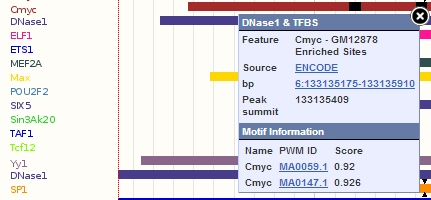

The Ensembl Regulatory Build provides a genome-wide set of regions that are likely to be involved in gene regulation. The classification of these regions are:
Each region is constructed from experimental data that describes chromatin activity or state (e.g. DNase1, Histone modifications, Polymerase) and transcription factor binding following a four-step analysis :
First we define focus experimental marks, which narrow the analysis on focused regions on the genome. These marks were chosen because they are widespread across the transcriptional machinery. They include DNase1 hypersensitivity (which indicates region of open chromatin), CTCF (which characterises insulator elements) and other transcription factor binding marks.
Next, we define the core regions where focus marks overlap. These are likely to be positioned on or around any potential regulatory motif. To maintain resolution and to avoid chaining of regulatory features across regions of dense regulatory elements, a 2kb length threshold is used. If a feature exceeds this cut-off, it is treated as an attribute feature (see below) rather than a core region.
Once the core regions define generic MultiCell regulatory features, they are then extended into cell type specific attribute Regulatory Features. Attribute features integrate long-range marks (typically histone modifications) and are useful for classification. For a given cell type, if a core region overlaps with a focus marker, it is extended into an attribute feature. Overlapping and nearby (<2kb) marks are integrated into the feature, thus defining the bounds of the attribute region around the core region.
For a cell line where there is no core data available, but there is substantial attribute data present, the core regions defined by the other cell lines are projected onto it. These regions are extended into attribute features as detailed above.
We first define a set of Genomic Features, which broadly characterise the function of a genomic region into:
Cell-type specific attribute features are classified according to the pattern or combination of marks (e.g TFBS and/or histone modifications) integrated into them (see above). For each pattern that occurs in at least 100 Regulatory Features, we count the number of times these features overlap with each class of Genomic Feature, and compute the same for a random set of regions with the same lengths. If more than 50% of the Regulatory Features overlap a particular class of Genomic Feature and the chi-squared statistic with respect to the random regions is greater than 8.0 (P<0.005) we record that this pattern is associated with this class of Genomic Feature. If associated, we test whether longer patterns (i.e. containing extra marks) also overlap with the same genomic feature. If fewer than 50% of those Regulatory Features overlap, we record that this second pattern is not associated with that class of Genomic Feature.
Having determined which pattern is associated or not to a given class of Genomic Feature, we look at each Regulatory Feature and use those patterns to associate it to a Genomic Feature. During this process it is possible for a given Regulatory Feature to be associated with more than one class of Genomic Feature. This is particularly the case where experimental marks are densely clustered. To resolve these conflicts, a priority rule is observed.
We only classify cell-type specific regulatory features. We do not classify the multi-cell type set (i.e. all cell types combined) as different cell types may give conflicting signals reflecting their unique combination of regulatory and transcriptional states.
For each transcription factor (TF), which has both a ChIP-seq data set in the funcgen database, and a publicly available position weight matrix (PWM), we annotated the position of putative TF binding sites within the ChIP-seq peaks.
PWMs are taken from JASPAR (Bryen et al., 2008) and mapped to the genome using the find_pssm_dna program from the MOODS software (Korhonen et al., 2009) with the -f flag set and a permissive threshold of 0.001. We then filter these mappings using a log odds score threshold. The threshold is derived per PWM by considering the occurrence of mappings in a sample of randomly positioned 'background' sequences, matched in terms of size and chromosome to the ChIP-seq peaks for a given TF. We select the threshold such that the proportion of these background peaks containing a mapping is approximately 5%. Only mappings that overlap the corresponding ChIP-seq peaks are included in the functional genomics database.
PWM features (also known as MotifFeatures) are visualised in the browser as black boxes within regulatory features and TF evidence peaks. Sometimes these boxes are very thin and appear as lines. Clicking on the black box will highlight specific information in the pop-up menu, such as the matching score (relatively to the optimal site) among others, as shown below.
